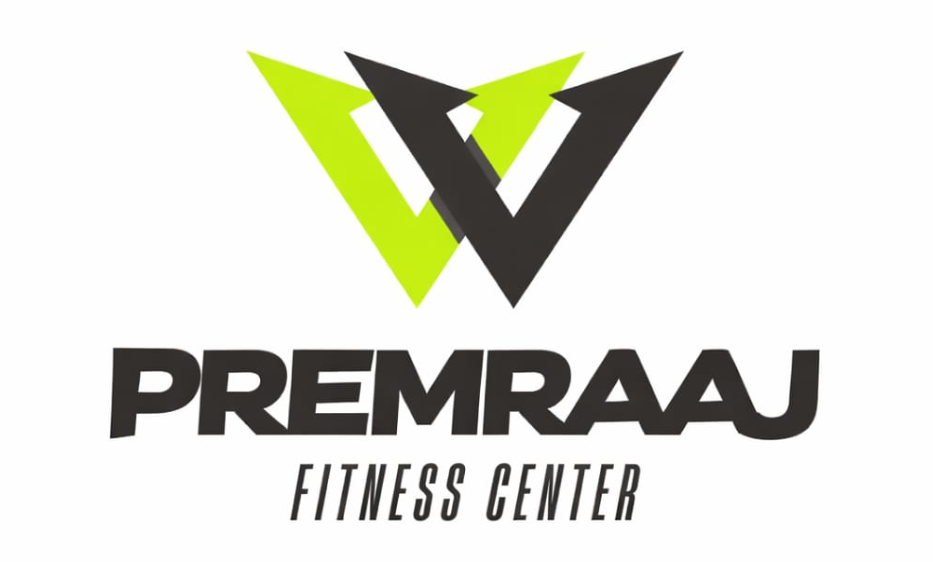

I bridge the gap between Physical Discipline and Digital Precision. Just as fitness requires consistency and data tracking, high-quality software development demands a rigorous architectural foundation and ethical integrity.
Designing robust SQLite databases and back-end logic for seamless data flow in mobile environments.
Developing tools like the "Multilingual Star Dictionary" to preserve linguistic data for future generations.
Applying the mindset of a fitness professional to technical problem-solving: persistent, goal-oriented, and iterative.